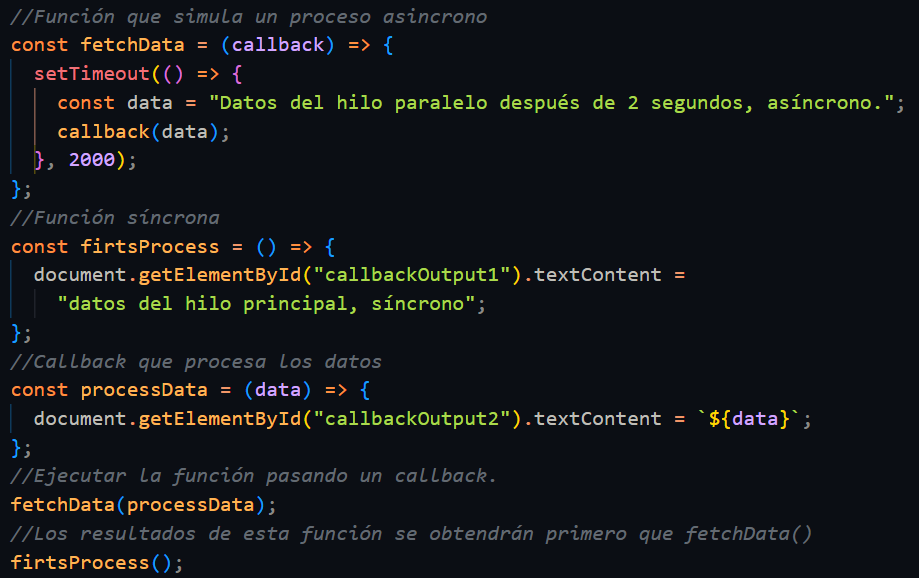
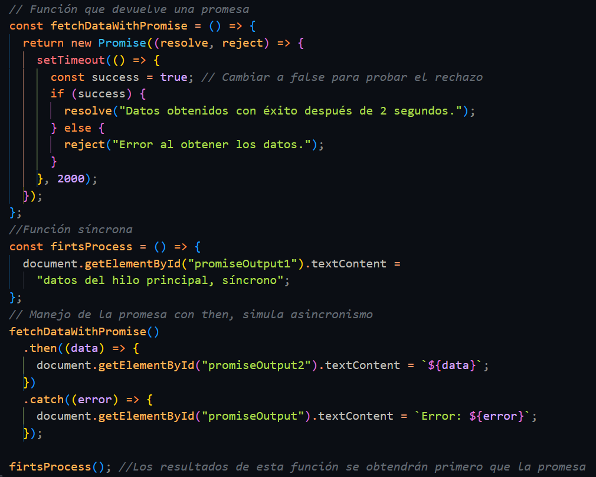

Los Thread (Hilo). Javascript permite realizar programación multihilos en este entorno. En
realidad,simula la creación
y ejecución de hilos, pero para el desarrollador es lo mismo. Ésto simplifica muchísimo la
creaciónde aplicaciones
Javascript.
Bloqueante
Una tarea no devuelve el control de la implementación o de la lógica que esté haciendo hasta que sea
completado. Por
ejemplo el alert() el cual no dejará continuar hasta que le des ok a la ventana. Una llamada u
operación bloqueante no
devuelve el control a la aplicación hasta que se ha completado. Por tanto, el thread queda bloqueado
en estado de
espera.
No bloqueante
Una tarea devuelve inmediatamente el control para poder continuar sin necesidad de detener nuestra
aplicación,
devolviendo los datos, y continuar con la lógica sea el caso. Una tarea no bloqueante se devuelve
inmediatamente con
independencia del resultado. Si se completó, devuelve los datos. Si no, un error.
Síncrono
Las tareas se ejecutan de forma secuencial, deben esperar a que se completen para continuar con la
siguiente tarea. Se
ejecuta tarea por tarea
Asincronismo
Es un modelo de programación que permite realizar múltiples tareas al mismo tiempo, sin bloquear el
flujo
del programa.
Callback
Una función que se pasa como argumento a otra función y se ejecuta después de que esta haya
completado su
tarea.
Promesa
Un objeto que representa un valor que puede estar disponible ahora, en el futuro o nunca. Ayuda a
manejar
operaciones asincrónicas de manera más estructurada.
Async/Await
Una sintaxis moderna para manejar promesas que hace que el código sea más legible y fácil de
escribir.
Event Loop
Un mecanismo que permite a JavaScript realizar operaciones no bloqueantes, delegando tareas a otras
partes
del sistema y volviendo al programa principal cuando están listas.
Introducción
El asincronismo en JavaScript es un modelo de programación que permite realizar múltiples tareas sin
bloquear el
flujo del programa.
Esto es esencial en aplicaciones modernas que necesitan interactuar con APIs, manejar eventos del
usuario o
procesar grandes cantidades de datos.
JavaScript, siendo un lenguaje de un solo hilo, utiliza mecanismos como el event loop
para
manejar tareas asincrónicas. Sin embargo, escribir código asincrónico puede ser complejo si no se
utilizan las
herramientas adecuadas.
En este tutorial aprenderás el uso de callbacks, promesas y async-await para manejar asincronismo con
javascript y a medida que explores cada tema, encontrarás ejemplos prácticos que puedes ejecutar y
analizar para entender cómo manejar asincronismo en JavaScript de manera eficiente.
Callbacks
Un callback es una función que se pasa como argumento a otra función, para que esta la
ejecute
en un momento futuro,
generalmente después de completar una operación asincrónica. Son útiles para manejar tareas que tardan
en
completarse, como llamadas a una API o temporizadores.
Ejemplo de código:

Promesas
Una promesa es un objeto en JavaScript que representa la eventual finalización (o
falla) de una
operación asincrónica
y su valor resultante. Permiten manejar tareas asincrónicas de manera más estructurada, evitando el
"callback
hell".
Ejemplo de código:

Async/Await
El método fetch es una API moderna de JavaScript para realizar solicitudes HTTP. Es más
flexible y legible que métodos más antiguos como XMLHttpRequest.
Aunque `fetch` devuelve una promesa que puede manejarse con .then(), el uso de
async/await hace que el código sea más claro y fácil de leer.